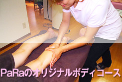
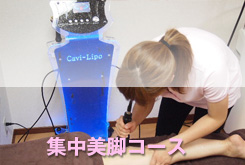
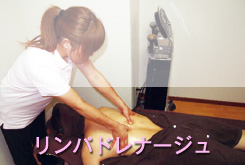
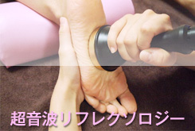

施術案内
当サロンの施術をご案内いたします。
充分な事前カウンセリングでお客様に最適な施術をご提案いたします。
当サロンでは最新の美容マシンを取り入れ、痩身を目的とした施術を行っております。
筋肉の衰えからくる血行不良での脂肪太り。塩分・油分の過剰摂取からくる代謝不全の水太り。続けていた運動を止めた途端、急激に筋肉が硬結する筋肉太り。
あらゆる原因に合わせた個々の施術プランを組み立て、全身スッキリ理想のボディラインへ仕上げます。

PaRaのオリジナルボディコースでは、ぽっこりお腹、脇腹、お尻、太もも、二の腕等、その方の気になる部位を中心に、キャビテーション・スーパーセルライト・EMS等を使い脂肪やセルライトを分解します。
腹斜筋や大腰筋を鍛えて、ウエストのくびれ、垂れ下がったお尻のヒップアップ、自分では落としにくい太ももや二の腕をシェイプアップしていきます。
また整体の技術をプラスしたPaRaのオリジナル手技で骨盤を引き締め、内臓の働きを活性化、血行促進のリンパドレナージュで美しい理想のボディラインを作ります。
詳しく見る»

むくんだ足首やふくらはぎ、痩せにくい太もも、ヒップ下のセルライト、腰まわり等、気になる下半身を徹底的にダイエットします。
骨盤を引き締め、正しい位置に戻すことにより、ラインをしっかり整えて、美しい理想のレッグラインを作ります。
施術後は違いを実感していただけます。
詳しく見る»

天然のアロマオイルを使用し、機械を一切使わない全身オールハンドの極上癒しトリートメントです。
首・肩の凝り、腰の張り、足の腫み、全身のだるさや疲れ等をくまなくリンパドレナージュ（マッサージ）していきます。
リンパの流れがスムーズになり、全身スッキリ、腸セラピー効果で便秘も解消します。
至福のひとときを体験してみませんか。
詳しく見る»

従来のリフレクソロジーに、経絡操作・超音波をプラスし、内臓の働きをより活性化させます。
リンパの流れを促進させるため、1回の施術でふくらはぎ・足首がスッキリ細くなります。
詳しく見る»
お問い合わせ・ご予約
千葉県船橋市西船4-11-10-202
※当サロンは予約制となっております。
（土日祝は混み合いますので、お早めにご予約下さい）